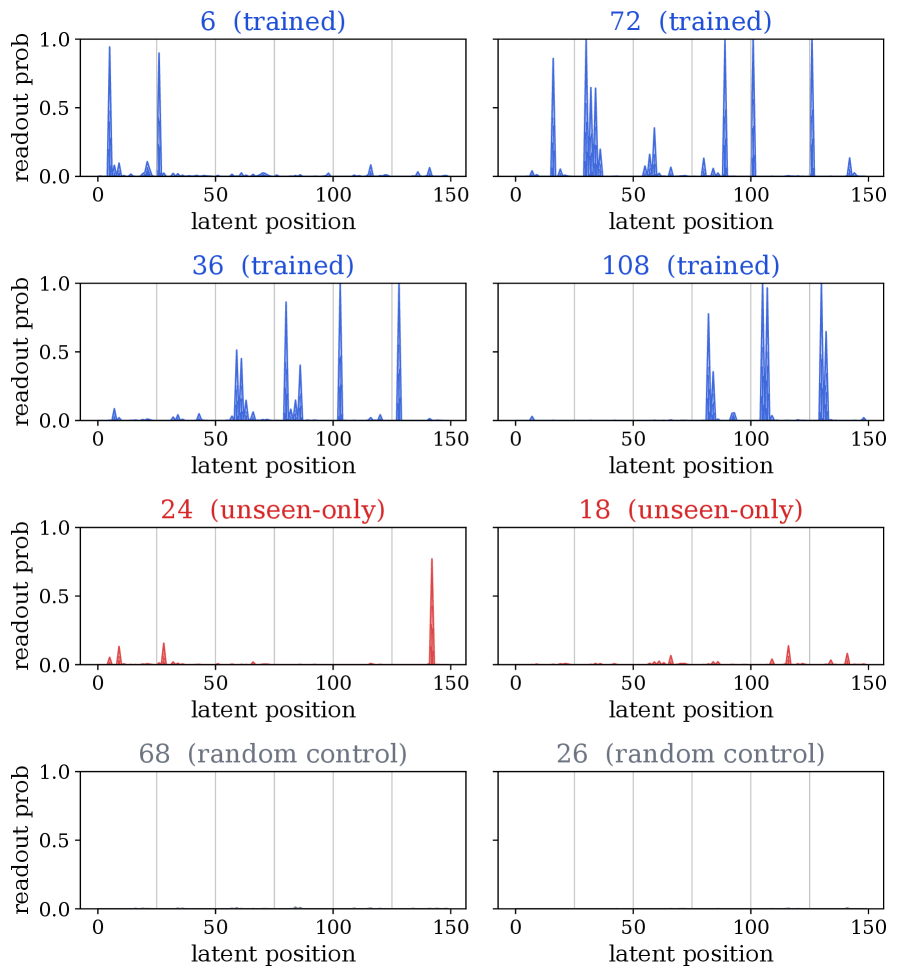

这一视角使得两个损失之间的分工变得精确。首先，支撑包含关系
表明每条金标准链都落在逐位置金标准token支撑的笛卡尔积内部。最小化L_step（到这些边缘分布的交叉熵）把模型的PCL拉向该乘积，即最小化KL(∏_{i,j} q(T_{i,j}|Q) ∥ p_θ^PCL(T|Q))。所以L_step起支撑覆盖作用：它让每个位置在正确的金标准token上放置概率质量，而无需复现联合分布：LOTUS从不采样该联合分布，因为答案是直接从联合计算的隐状态解码的。其次，L_ans提供了PCL单独缺乏的全局选择压力：由于答案的训练以整个隐式配置为条件，梯度偏袒那些能真正支撑正确答案的联合计算隐藏状态。两个损失因此在构造上互补：L_step提供覆盖，L_ans提供联合选择：这正是我们在第5.3节实证验证的行为：去掉任一损失都会降低金标准链的似然。
为进一步探查LOTUS与建模自回归链似然的对比，我们在第3.4节引入一个自回归解码器变体，并在第4.2节对比结果。
3.4 LOTUS-aux：辅助解码器变体
现有工作中探索的CoT监督的另一条路线是自回归链似然：一个以隐式块为条件的辅助自回归解码器在教师强制下为CoT token打分。这带来一个权衡：作为用自回归方式建模链的交换，CoT监督不再直接流经生成答案的基础LM头，而教师强制引入了额外的训练-推理不匹配。
我们在自己的循环填充式骨干上把这一路由实例化为LOTUS-aux。LOTUS-aux复用与LOTUS相同的循环前向和最终前向（图2）。唯一的区别是循环前向中的监督，它经由辅助解码器路由，而非直接通过基础LM头读取。该辅助解码器镜像SIM-CoT（Wei et al., 2025），但不是自回归地生成隐状态并每步监督单个隐状态，LOTUS-aux通过循环骨干并行地产生全部K个隐式块，并每步监督一个完整c-token的块。我们在下文中描述这一路由。

如图3所示，辅助解码器g_φ 是一个额外的解码器模型，在每次循环迭代t，读取隐式块h^(t)_t（我们在迭代t选择块i = t，即第t个块的c个循环后隐状态）作为c-token前缀，并在教师强制下预测金标准CoT步骤T_t = (T_{t,1}, …, T_{t,|T_t|})，其中 |T_t| 是该步骤的token长度。令z̃^(t) = (z̃^(t)_0, …, z̃^(t)_{|T_t|−1}) 表示每个输入CoT位置m ∈ {0, 1, …, |T_t|−1} 处的输出隐藏状态（m = 0为最后一个隐式位置h^(t)_{t,c}，它预测T_{t,1}；m > 0为金标准token T_{t,m}）。镜像式4的最终前向，我们用
生成z̃^(t)，其中前c−1个隐式位置h^(t)_{t,1}, …, h^(t)_{t,c−1} 是条件前缀。对金标准CoT的教师强制下一token交叉熵给出：
其中N_step = Σ_{t=1}^{K} |T_t| 是被监督CoT token的总数。监督本身仍是并行的：在教师强制下，金标准前缀在每个位置都被喂入，因此所有CoT位置在一次前向中就被打分，没有顺序生成。换句话说，自回归分解只影响损失，不影响计算。
式10在迭代t读取块i = t（逐迭代，而非最终迭代R）。我们在第4.3.1节验证了这一选择：对辅助解码器路由而言，逐迭代读出优于在最终迭代R读取所有块。第3.3节的答案损失L_ans不变，因此完整的LOTUS-aux目标为L^aux = L_ans + λ_step · L^aux_step。在我们的实验中，g_φ 用基础LM的副本初始化，并与基础LM一起训练。训练和架构细节见附录D。
辅助解码器g_φ 只在训练时使用。推理时，LOTUS-aux与LOTUS完全一样地从循环后的隐状态自回归地生成最终答案（图2(b)），因此LOTUS的推理效率收益同样适用于LOTUS-aux。
4实验
我们的实验考察四个问题：LOTUS有多准、推理时多高效、每个设计选择贡献多少、以及它的隐空间是否可解释且与CoT对齐。第4.1节介绍实验设定，第4.2节给出相对显式CoT和先前隐式基线的准确率与延迟结果，第4.3节消融监督设计、隐式块宽度c、循环深度R，以及在无需重训情况下改变c和R的推理时鲁棒性，第5节分析学到的隐式表示。完整的训练和评估细节见附录D。
沿用SIM-CoT（Wei et al., 2025），我们在GSM8k-Aug（Deng et al., 2023）上训练，含38.5万训练样本，并在GSM8K测试集（Cobbe et al., 2021）上报告域内准确率，外加三个域外基准：GSM-Hard、MultiArith和SVAMP。我们还在GSM8K-Aug的自然语言版本（Wu et al., 2025）上训练，作为效率压力测试，其中每个推理步骤是一句完整的自然语言解释，而非紧凑的数学表达式。我们使用三个递增规模的骨干：GPT-2（124M）（Radford et al.）、Llama-3.2-1B-Instruct和Llama-3.2-3B-Instruct（Grattafiori et al., 2024）。
我们报告LOTUS（在Llama骨干上K = 6块、每块c = 25个token，在GPT-2上c = 13，R = 6次循环迭代）和LOTUS + CODI（额外加上CODI单位置蒸馏损失）。辅助解码器变体LOTUS-aux和LOTUS-aux + CODI（第3.4节）共享同一配置。我们与作为参照的显式CoT和无CoT，以及每个骨干上的CODI（Shen et al., 2025）和CODI + SIM-CoT（Wei et al., 2025）对比，它们与LOTUS共享顺序隐式推理预算（R = 6），仅每步隐式token数量不同。使用不同顺序计算预算的隐式方法：Coconut（Hao et al., 2025）、Coconut + SIM-CoT（共10个顺序生成的隐式思维）和并行隐式方法PCCoT（Wu et al., 2025）、KaVa（Kuzina et al., 2026）（3个顺序步骤、共24个隐式token）分别在表13和表14（附录C）中单独对比。
LOTUS从GPT-2到Llama-3.2-3B-Instruct都能良好扩展（表1）。先前的隐式方法在小规模上与显式CoT持平，但随着骨干增大而落后：CODI + SIM-CoT在GPT-2上与显式CoT持平（42.6对42.7），却在3B上落后9.2分，KaVa（Kuzina et al., 2026）以类似幅度拉大（1.9到5.8分，表13）。LOTUS则在每个规模上都把域内差距保持在约1.5分以内，且差距不随规模扩大。虽然较小规模的结果相当集中，但决定性的对比在Llama-3.2-3B-Instruct上：LOTUS在域外平均上超越显式CoT，并把域内GSM8K差距缩小到1.5分以内。LOTUS + CODI进一步把它收紧到1分以内。
在3B上，LOTUS-aux表现与LOTUS相当，且远高于使用同等规模辅助解码器的CODI + SIM-CoT基线。因此收益来自带并行CoT监督的循环填充式骨干，与路由方式无关。这种持平仅在3B成立：在更小规模上LOTUS-aux退化，而直接LM头监督（LOTUS）在跨规模上保持稳健。
思维阶段是方法间差异的主导（表2）：CoT自回归地解码它的链，而LOTUS把相同的「思考」压缩进R次并行隐式迭代，使其思维比CoT快2.5倍、比SIM-CoT快1.2倍（我们在单张NVIDIA H100 NVL、批大小1、贪心解码下测延迟，分为查询预填充、思维和答案三个阶段。SIM-CoT和CODI都用单个隐式token顺序解码来替换每个显式CoT步骤；SIM-CoT还在CODI上额外加了LoRA适配器（秩128），inflate了每个阶段。LOTUS的预填充和答案阶段就是标准LM操作（图2），因此它们在表2中与显式CoT持平（16.7对15.9 ms，31.5对29.5 ms）；唯一不同的阶段是循环隐式思维）。CODI在思维阶段比LOTUS快，因为它每步只解码单个隐状态，而非LOTUS的K·c = 150个并行位置，但代价是准确率。LOTUS仍只是略慢（133对88 ms），因为它并行消耗所有位置。表8的推理时宽度扫描进一步把顺序深度与并行宽度分开：在R固定时，把隐式前缀从6个位置增加到300个位置，思维延迟只变化30 ms。
主要的GSM8K-Aug设定使用紧凑的数学表达式步骤，而自然语言CoT需要显式模型解码长得多的自然语言推理。在3B自然语言CoT压力测试（表3）中，LOTUS准确率与显式CoT持平（68.13对68.41），同时把思维阶段延迟从963.6 ms降到140.8 ms，实现6.9倍加速。在这一自然语言设定下，LOTUS（68.13% GSM8K）远超Kuzina et al. (2026) 报告的隐式基线PCCoT（47.6%）、CODI（55.9%）和KaVa（60.0%）（表14），保持在显式CoT的方差范围内（表3）。
我们消融LOTUS的每个组件以隔离其贡献。除非特别说明，所有消融使用Llama-3.2-3B-Instruct，在GSM8K测试集（Cobbe et al., 2021）上评估。
4.3.1隐式监督设计
LOTUS通过主LM头f_head对循环后隐状态h^(R) 的直接读出（L_step）来监督隐式块。我们把它与五个替代方案对比，其余固定（K = R = 6，c = 25，也保留L_ans）：（i）无隐式监督（仅L_ans）；（ii）CODI（Shen et al., 2025），把一个答案前的单个隐状态蒸馏到教师CoT模型的隐藏状态；（iii）LOTUS（逐迭代），在每次迭代t而非循环后h^(R) 通过f_head读取h^(t)；（iv）LOTUS-aux，在每次迭代t通过一个独立的辅助解码器g_φ 读取h^(t)（默认，第3.4节）；（v）LOTUS-aux（循环后），改为通过g_φ 读取h^(R)。
没有任何隐式监督时，仅循环骨干（63.3%）就已经超过使用每步单个隐状态的CODI + SIM-CoT（62.3%，表1）；因此循环填充式骨干本身已经有益。每个有监督的变体都超过无隐式监督和仅CODI，确认金标准CoT监督对收益有贡献。LOTUS（循环后直接，70.0%）与最佳LOTUS-aux安排（逐迭代，69.9%）持平。因此直接（LOTUS）和辅助解码器（LOTUS-aux）路由在各自最佳安排下表现相当。
LOTUS在循环后读出时表现最好（70.0% 对逐迭代68.2%），这让早期隐式块能在循环结束前充分精炼。LOTUS-aux反而在逐迭代读出时最好（69.9% 对循环后68.4%），这缩短了梯度路径：可能因为其额外解码器已经拉长了路径。
4.3.2循环架构设计
我们在c ∈ {1, 5, 10, 25, 30} 上分别训练模型，以测量每块预算对准确率的影响，固定K = 6（表7）。准确率从c = 1（49.7%）急剧上升到c = 5（67.5%），之后仅微增，在c = 25和c = 30持平于70.0%。每个CoT步骤仅一个token对直接读出监督来说太窄，但中等宽度就足够。
我们在单个以c = 25训练的checkpoint上扫描推理时预算c ∈ {1, 5, 10, 25, 30, 50}（表8）。把c降到训练值以下会损害准确率（c = 1时 −19分，c = 5时 −11分，c = 10时 −6分），而超过它则略有帮助后进入平台（c = 30和c = 50均为70.5%）。由于隐状态在固定的R = 6个顺序步骤内并行处理，思维阶段延迟仅随c变化50倍而增加约30 ms（111到141 ms）。这与自回归CoT形成对比，后者的延迟随思维token数量线性增长。
我们为R ∈ {2, …, 6} 分别训练模型，固定K = 6和c = 25，使隐式前缀有K·c = 150个位置，仅改变顺序精炼的深度（表6）。更大的R让模型在读出前有更多精炼迭代。因此准确率随R急剧上升（从R = 2时的14.6% 到R = 6时的70.0%），在R = 5（68.1%）后继续增益，到R = 6时几乎饱和。
复用以R = 6训练的模型，我们在推理时改变R ∈ {1, …, 7}，隐式前缀固定为150个位置（表6）。准确率随R上升（R = 1时22.7% 到R = 6时70.0%），在训练所用的R = 6处达到峰值，在R = 7时略降（69.3%）。运行更少迭代让模型精炼机会更少，而运行多于训练时的迭代不再有进一步收益。
5隐式表示分析
我们沿三个轴分析学到的隐式表示。这些分析共同表明，LOTUS的准确率提升伴随着结构化的隐式计算：循环后的隐状态携带可读的CoT token信号，把不可忽略的质量分配给未见但有效的备选，并依赖金标准CoT监督和答案监督二者来形成连贯的推理状态。第5.1节测量不同读出下金标准CoT的似然，第5.2节检验隐状态是否对未见但有效的推理链分配质量，第5.3节消融金标准CoT与答案监督在塑造表示中的角色。扩展的块到步骤解码示例延至第F.1节。
回顾h^(R) 表示循环后的隐状态，z̃^(t) 表示辅助解码器在t ∈ {1, …, R} 上的输出隐状态。我们在表9中评估四种读出：（i）LOTUS，通过基础LM头读取h^(R)；（ii）LOTUS-aux，通过g_head读取h^(R)；（iii）LOTUS-aux，在教师强制（TF）下通过g_head读取z̃^(t)，与训练一致（每个块的c个隐状态与该块金标准步骤token配对）；（iv）LOTUS-aux，在自由运行（FR）下通过g_head读取z̃^(t)，用辅助解码器自己生成的token替代金标准token（LOTUS-aux（FR）比LOTUS-aux（TF）对LOTUS是更公平的参照：推理时金标准CoT不可用，所以LOTUS-aux必须喂它自己生成的token给它解码器，正是FR设定；TF行则喂入模型在测试时不会有的金标准前缀。我们报告贪心解码结果；用温度T采样（T ∈ {0.5, 0.7, 1.0, 1.5}）时FR的NLL移动 ≤ 0.05，top-1移动 ≤ 1个百分点）。
我们报告金标准CoT token序列T在隐式位置上的负对数似然（NLL）（注意h^(R) 读出在PCL（第3.3.2节）分解下为金标准CoT打分，z̃^(t) 在自回归分解下打分，因此NLL仅在同一分解内可直接比较，跨分解仅作参照。数学上PCL的NLL下界高于自回归NLL，细节见附录E）。我们还报告相对完整128K词表softmax的平均P(gold ∈ top-1) 和P(gold ∈ top-5)。所有指标在1,319道GSM8K测试题上平均。
通过f_head读取LOTUS循环后的隐状态h^(R)，给金标准CoT分配了3.07的低NLL和70.9% 的top-1准确率（表9），略胜LOTUS-aux（FR）的64.5%。教师强制的LOTUS-aux读出表现更好（1.56 NLL，84.3% top-1），但需注明它使用了金标准前缀作为输入，因此我们把它读作上界而非直接对比。尽管如此，结果确认隐状态携带了足够信息来重建金标准CoT链。
令人惊讶的是，即便在LOTUS-aux中h^(R) 从未被直接监督通过g_head预测金标准CoT，我们仍能以25.8% 的top-5概率通过g_head读取h^(R)。贪心解码也浮现出一些有意义的金标准token，表明CoT内容由隐状态本身承载。值得注意的是，尽管经过不同的头监督，LOTUS和LOTUS-aux有相似的效果，使循环后隐状态h^(R) 把质量放在CoT步骤上，但LOTUS-aux读出格式较乱（这符合预期，因为它未被直接监督）。我们在附录F中给出两个模型并排的h^(R) 读出示例。
除测试集中的金标准链外，我们检验LOTUS和LOTUS-aux是否对未见但有效的推理链分配质量，而非只记忆训练集中见过的轨迹。我们使用与第5.1节相同的四种读出配置。
对每个问题，我们把其真实推理链与一个未见但有效的备选对比。令G和U分别表示仅出现在真实链和仅出现在未见推理链中的中间数字集合。一个随机控制集作为基线。我们报告每个集合在其最强烈浮现位置上的平均逐token负对数似然（NLL，越低越自信）。我们还报告P(U ∈ top-k)，即在任意隐式位置进入top-k读出的U数字的比例。完整构造和指标细节见第F.2节。
在所有四种读出中，顺序G ≪ U ≪ Random成立（表10，NLL越低=浮现越多）：每个读出给「仅真实」的数字分配的NLL远低于「未见但有效」的数字，后者又远低于随机控制。关键的是，U信号是集中的而非弥散的：P(U ∈ top-k) 列确认未见有效的中间结果确实在top-k中浮现（例如通过基础LM头的LOTUS，15.3% 为top-1，64.0% 落在top-5内，尽管从未被训练过）。第F.3节和图4给出了一个路径级示例和可视化网格：两条有效链通过不相交的中间数到达同一答案（108），而未见路径的数字（24、18）在循环后读出中浮现，尽管从未出现在训练链、问题或答案中。

我们现在问，LOTUS的两个监督损失各自对上文观察到的隐式表示贡献了什么。第3.3.2节的理论赋予L_step和L_ans互补的角色。我们比较三个监督不同的模型：LOTUS（两个损失）、仅L_step、仅L_ans。
通过基础LM头f_head读取h^(R)，表11报告GSM8K测试集上的NLL、P(gold ∈ top-1) 和P(gold ∈ top-5)，使用与表9相同的协议。
LOTUS胜过两个消融（表11）。仅L_step由于缺乏L_ans提供的跨块耦合和答案锚定，在每一列上都是最差的。仅L_ans由于没有把h^(R) 直接绑定到金标准CoT，落在离金标准token更近的位置（NLL 5.97，top-5 26.5%），但其top-1率与仅L_step相近，远不及LOTUS（NLL 3.07，top-5 85.8%）。仅答案损失把h^(R) 安定到一个与答案一致的邻域，却不与金标准链对齐，这与第3.3.2节假定的互补角色吻合。
我们沿用先前的隐式推理工作（Hao et al., 2025；Shen et al., 2025；Wei et al., 2025）在数学基准上评估。该范式能否迁移到其他领域仍是未来的开放方向。块预算K、每块宽度c和循环深度R是固定超参，必须设置得能覆盖预期步骤数，因此长于K步的链会回退到尾部的自回归补全。让K、c和R自适应是自然且有前景的未来方向。
独立观点：LOTUS的意义不只在「快」，而在于它把隐式推理从黑箱变成了可读的对象。它用最朴素的交叉熵、最朴素的循环复用，就追平了显式CoT，而且隐状态里能读出模型从未被训练过的有效推理路径。这暗示一个大方向：很多「必须显式生成」的中间过程，其实可以在隐藏状态里并行完成，只要监督信号足够直接。
小米MiMo罗福莉后训练新范式MOPD: 多教师同策略蒸馏，多领域无损集成
小米MiMo罗福莉:8卡GPU让1T参数模型跑出1000 TPS , FP4+DFlash+TileRT全解读
万亿参数RL实战：如何用28个H200节点训GLM-5
阿里Sparse Attention on CXL替代RDMA做KV Cache解耦 推理2.1×吞吐, 9.7×TTFT
智谱GLM 5.2 RL: 单Rollout异步优化SAO稳定训练1000步全面超越GRPO
榨干GPU性能：流水线解码消除GPU气泡，推理吞吐提升35%
【Agent for AI Infra三】摩尔线程MusaCoder国产算子生成超过Opus4.7：数据合成-SFT-RL全栈拆解
把KVCache变成可训练记忆：Context Tuning让LLM免权重微调
腾讯混元hy3大模型技术之TurnOPD：回合感知的在线策略蒸馏，长程Agent提速2.29倍
NVIDIA TriAttention解读: KV Cache压缩最大的问题不是算法而是两个Infra问题
KVCache缝合术: 突破前缀匹配天花板,首Token快14倍 多文档快2~4倍
TokenSpeed-Kernel：把推理内核做成一等公民
蚂蚁CausalMix: 将数据混合从超参搜索转换成因果推断
Google新论文RubricEM: 评分标准引导的深度研究Agent训练框架
Agent卷向AI Infra: SGLang团队用硬核Agent优化框架和CUDA Kernal性能
参考：https://arxiv.org/html/2606.31779v2